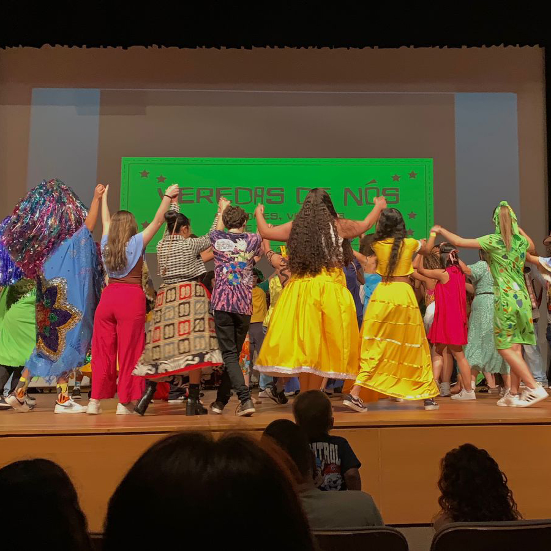
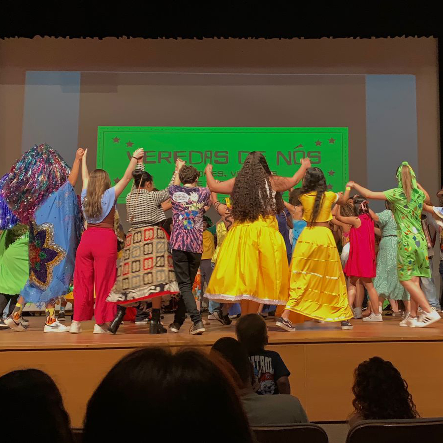

Linguagens e Suas Tecnologias
A área de "Linguagens e Suas Tecnologias" busca formar indivíduos capazes de se comunicar de forma eficaz, utilizar as tecnologias de forma crítica e criativa, e apreciar a diversidade de linguagens e formas de expressão presentes na sociedade. Essa área é composta por 4 matérias:
Português, Inglês, Artes e Educação Física
Atividade em destaque
Maracatu Rural
Anualmente no Senac ocorre uma mostra cultural com um tema específico, em 2024 o tema foi "Veredas de Nós", visando buscar algumas origens da cultura brasileira, as turmas de IOT ficaram encarregadas de realizar um Maracatu Rural. Cada turma foi dividida em grupos, cada grupo dedicado em uma parte, o meu grupo ficou encarregado que confeccionar um estandarte, e o resultado foi incrível!

 
